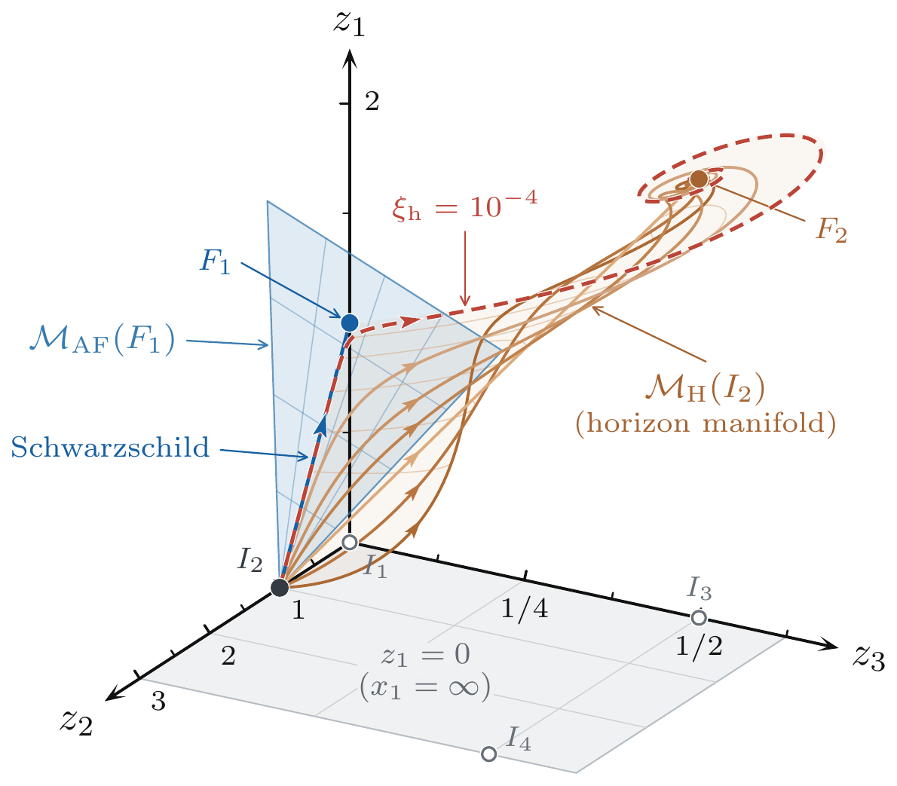

Gravitational Caloric Theory
S. X. Tian, Gravitational caloric theory: From early dark energy to a wide variety of gravitational phenomena, Phys. Rev. D 114, 044042 (2026). arXiv:2608.07318.
S. X. Tian and Z.-H. Zhu, Black holes with conical infinity in gravitational caloric theory, submitted to Phys. Rev. D (2026). arXiv:2610.09606.
Gravitational caloric theory generalizes general relativity from the fluid side. The theory has a broad range of cosmological and astrophysical applications, including early dark energy (initial motivation), the early static hot Universe, conical black holes, and gravitational-wave physics. Among these, the following two may have particular astronomical relevance. The early static hot Universe faces theoretical challenges and will be discussed separately. Conical black holes in our theory illustrate a distinctive way in which new physics may emerge: spacetime can remain in close agreement with general relativity in the strong-field (near-horizon) and conventional weak-field (e.g., Solar System) regimes, yet approach conical geometry in the extremely weak-field regime. This highlights a possible avenue for the observational search for new physics.
Selected follow-up works
To be added.